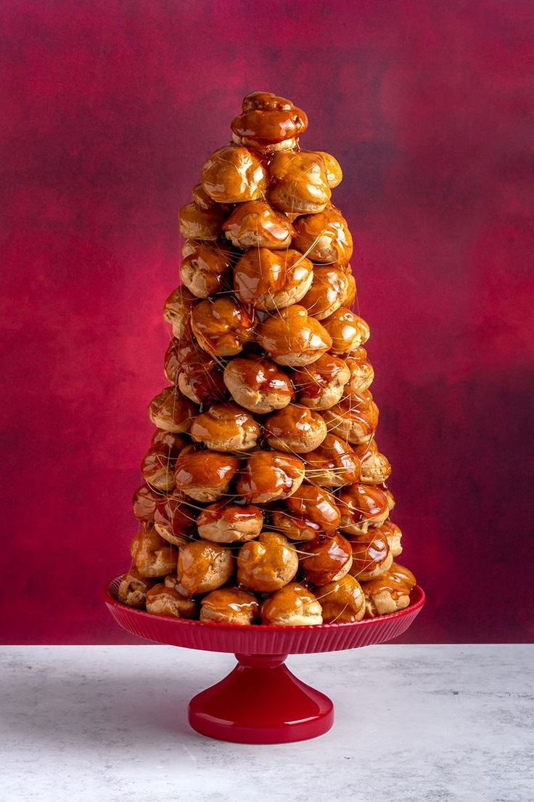

Croquembouche Recipe
Croquembouche is a spectacular French dessert that translates to "crunch in the mouth."
It consists of delicate, golden-brown choux pastry balls piled into a towering cone shape and bound together with threads of caramel.
Each pastry ball is light and airy, with a crisp outer shell that gives way to a tender, creamy interior.
The dessert is not only a feast for the taste buds but also a stunning centerpiece at special occasions like weddings and celebrations.
Its elegant presentation and delightful combination of textures make it a timeless classic in French pastry artistry.
Ingredients
- 1 cup water
- ½ cup unsalted butter
- 1 cup all-purpose flour
- 4 large eggs
- 1 pinch of salt
- 2 cups granulated sugar
- ½ cup water (for caramel)
Method
- In a saucepan, combine water, butter, and salt. Bring to a boil.
- Reduce heat to low, add flour all at once, and stir vigorously until mixture forms a ball.
- Transfer mixture to a mixing bowl and let it cool for 5 minutes.
- Add eggs one at a time, beating well after each addition, until smooth.
- Preheat oven to 425°F (220°C).
- Transfer dough to a piping bag fitted with a large round tip.
- Pipe small balls onto a baking sheet lined with parchment paper.
- Bake for 15-20 minutes or until golden brown and puffed.
- Let the pastry balls cool completely.
- In a saucepan, caramelize sugar with water over medium heat.
- Dip the top of each pastry ball into the caramel and stack them into a cone shape.
- Let the caramel cool and harden before serving.